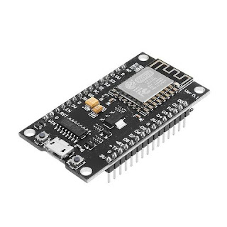
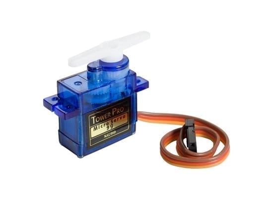
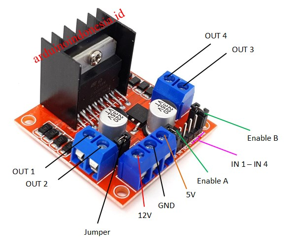
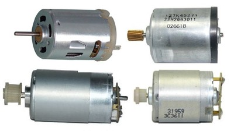

Memperkenalkan TwistRush
⬇
TwistRush adalah prototipe robot sederhana yang dikembangkan oleh mahasiswa Universitas Muhammadiyah Sumatera Utara (UMSU) sebagai langkah awal dalam menjawab ketertinggalan Indonesia di bidang teknologi. Di tengah pesatnya kemajuan teknologi global, Indonesia masih tertinggal dalam pengembangan robotika dan otomatisasi. TwistRush hadir sebagai wujud inovasi lokal dengan tujuan membantu aktivitas manusia sehari-hari secara praktis dan efisien.
Prototipe ini dirancang untuk melakukan tugas ringan seperti membantu membuang sampah, sehingga dapat dimanfaatkan dalam lingkungan rumah, sekolah, atau ruang publik. Meskipun masih dalam tahap pengembangan awal, TwistRush diharapkan menjadi inspirasi bagi generasi muda untuk terus berinovasi dan berkontribusi dalam kemajuan teknologi di Indonesia.

Dalam pengembangan robot TwistRush, ESP32 berfungsi sebagai otak utama (mikrokontroler) yang mengatur seluruh sistem dan pergerakan robot. ESP32 dipilih karena memiliki spesifikasi yang sangat mendukung untuk proyek robotika sederhana hingga menengah, dengan harga yang terjangkau dan fleksibilitas tinggi.

Dalam robot TwistRush, servo motor digunakan sebagai penggerak mekanik yang presisi, terutama untuk bagian-bagian yang memerlukan gerakan terkontrol, seperti lengan robot.

Sensor ultrasonik (seperti HC-SR04) digunakan dalam robot TwistRush untuk memberikan kemampuan mendeteksi jarak terhadap objek di sekitarnya. Sensor ini menjadi semacam "mata" bagi robot, agar bisa mengenali lingkungan dan menghindari tabrakan saat bergerak.

L298N adalah motor driver (pengendali motor) yang digunakan untuk mengatur pergerakan roda robot TwistRush. Komponen ini menjadi penghubung antara mikrokontroler (ESP32) dan motor DC, karena ESP32 tidak cukup kuat untuk langsung memberi daya pada motor.

Motor DC (Direct Current) adalah komponen penggerak utama yang digunakan untuk menggerakkan roda robot TwistRush. Komponen ini mengubah energi listrik dari baterai menjadi energi gerak putar, sehingga memungkinkan robot bergerak maju, mundur, atau berbelok.
Perancang dari robot ini